Electronics Workbench
Основные компоненты Electronics Workbench
Источники (Sources)
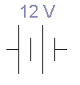 |
Источник постоянного напряжения Этот элемент представляет собой модель идеального источника напряжения, поддерживающего на своих выводах постоянное напряжение заданной величины. ЭДС источника постоянного напряжения или батареи измеряется в Вольтах и задается производными величинами (от мкВ до кВ). Короткой чертой в изображении батареи обозначается вывод, имеющий отрицательный потенциал по отношению к другому выводу. Батарея в Electronics Workbench имеет внутреннее сопротивление, равное нулю, поэтому, если необходимо использовать две параллельно подключенные батареи, то следует включить последовательно между ними небольшое сопротивление (например, в 1 Ом). |
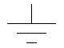 |
Заземление В схеме, собранной с помощью Electronics Workbench, как и практически для любой реальной схемы, требуется указать точку нулевого потенциала, относительно которой определяются напряжения во всех других точках схемы. Именно для этой цели служит элемент заземление. Его единственный вывод подключается к той точке схемы, потенциал которой принимается равным нулю. Допускается и даже целесообразно, особенно для сложных схем, использовать несколько элементов заземления. При этом считается, что все точки, к которым подсоединены заземления, имеют один общий потенциал, равный нулю. Любая схема, содержащая:
должна быть обязательно заземлена, иначе приборы не будут производить измерения или их показания окажутся неправильными. Будьте внимательны при заземлении трансформаторов и управляемых источников. |
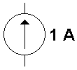 |
Источник постоянного тока Ток источника постоянного тока (direct current) измеряется в амперах и задается производными величинами (от мкА до кА). Стрелка указывает направление тока (от "+" к "-"). |
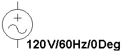 |
Источник переменного напряжения Действующее значение (root-mean-square - RMS) напряжения источника измеряется в вольтах и задается производными величинами (от мкВ до кВ). Имеется возможность установки частоты и начальной фазы. Напряжение источника отсчитывается от вывода со знаком "-". Действующее значение напряжения U, вырабатываемое источником переменного синусоидального напряжения, связано с его амплитудным значением Umax следующим соотношением:
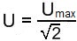 |
Точка - соединитель Основным свойством точки-соединителя является то, что вы можете подсоединять к ней проводники. Подсоединять проводники к точке можно слева, справа, сверху и снизу, то есть существует всего четыре места подсоединения проводников к одной точке и, следовательно, в одной точке могут соединяться не более четырех проводников. Для реализации такого подсоединения нужно подвести проводник при нажатой клавише мыши к соответствующей стороне точки, при этом около точки появляется маленький черный кружок. Отпуская в этот момент левую клавишу мыши, получаем требуемое подсоединение. |
Базовые элементы (Basic )
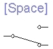 |
Переключатель Находится в окне выбора элементов Basic. Переключатель допускает два возможных положения, в которых один общий вход соединяется с одним из двух возможных выходов. По умолчанию переключение осуществляется клавишей [Space]. Чтобы назначить переключателю другую клавишу, нужно дважды щелкнуть мышью на этом переключателе, ввести требуемый символ в появившемся диалоговом окне и нажатием кнопки "Ok" подтвердить сделанный выбор. После этого переключение данного переключателя будет осуществляться с помощью выбранной клавиши. |
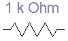 |
Резистор Находится в окне выбора элементов Basic. |
Индикаторы (Indicators)
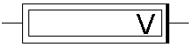 |
Вольтметр Этот элемент показывает напряжение, приложенное к его выводам. Одна из сторон этого элемента выделена утолщенной линией. Если напряжение, приложенное к выводам таково, что потенциал на выводе, находящемся с не выделенной стороны, больше потенциала на выводе, находящемся с выделенной стороны, то знак напряжения, показываемого вольтметром, будет положительным. В противном случае знак индицируемого напряжения будет отрицательным. |
||||||
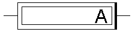 |
Амперметр Предназначен для измерения величины тока, протекающего через его выводы. Одна из сторон этого элемента выделена утолщенной линией. Если направление тока, протекающего через выводы элемента, совпадает с направлением от не выделенной стороны к выделенной стороне, то знак величины индицируемого тока будет положительным. В противном случае знак будет отрицательным. |
||||||
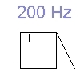 |
Динамик Этот элемент издает гудок заданной частоты, если приложенное к его выводам напряжение превышает установленный уровень напряжения. Значения порогового напряжения и частоты издаваемого сигнала можно задать в диалоговом окне, появляющемся при двойном щелчке мыши на элементе. |
||||||
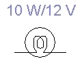 |
Лампочка накаливания Этот элемент моделирует обычную лампу накаливания. Поведение лампочки характеризуется мощностью и максимально допустимым напряжением. Изменить эти параметры можно двойным щелчком мыши на элементе. После этого появляется диалоговое окно. Введите требуемые параметры и закройте диалоговое окно щелчком на кнопке "Ok". Лампочка может находиться в трех состояниях:
|
Источники
studfile.net - Создание схемы радиоэлектронного устройства с помощью программы Electronics Workbench